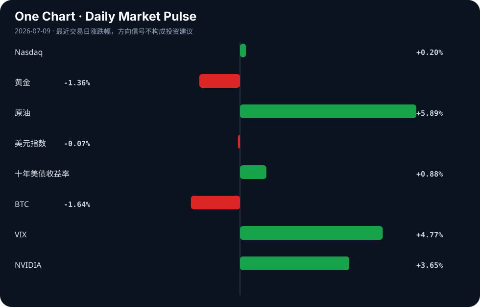

Daily Intelligence
2026-07-09｜Thursday
Today’s Thesis｜今日一句话
AI 基础设施投资正从企业战略升级为宏观经济稳定器，但算力扩张引发的电力硬约束与监管对准确性的压制，正在形成反向制约机制，可能提前触顶当前的增长反馈循环。
① Executive Summary｜30 秒
- AI：联邦政府发布压制 AI 准确性政策 [A1]，而 Alphabet 与 Meta 持续加码算力基建 [A9][A13]，合规约束与算力狂奔出现危险背离。
- 商业：企业用电量首超家庭 [A22]，Meta 在加拿大建最大海外数据中心 [A9]，算力军备竞赛正将科技巨头的资本支出转化为对能源与电网基建的深度绑定。
- 宏观：IMF 指出 AI 投资对冲了战争拖累 [B19][B21]，但日元套利交易平仓加速 [B20] 与亚欧市场负面趋势 [B7] 暗示，流动性暗流可能反噬 AI 投资的宏观托底效应。
② AI Daily
政策与准确性的悖论
What Happened：美国联邦公报发布政策声明，关注并在特定场景下压制 AI 系统的准确性 [A1]。 Why It Matters：这直接挑战了 AI 作为生产力工具的核心价值主张。当系统被要求为了安全或合规而牺牲准确性时，其替代人类脑力劳动的经济效用将大幅衰减。 Second-order Effect：准确性压制 → 终端效用下降与信任缺失 → 高风险领域（如医疗与关键决策）采用率停滞。
算力地理扩张与能源约束
What Happened：Meta 计划投资数十亿在加拿大建设其美国以外最大的 AI 数据中心 [A9]；Alphabet 的 AI 支出狂欢继续提振 Nvidia [A13]；同时，企业用电量有记录以来首次超过家庭用电 [A22]。 Why It Matters：AI 扩张已触及国内电力与土地的软肋，迫使算力资本向地缘政治盟友与能源丰沛区转移。数据中心正从“云端”回落为重资产、高耗能的物理约束实体 [A4]。 Second-order Effect：算力需求激增 → 选址向能源丰沛区转移 → 区域性电网基建与储能投资爆发。
高风险领域采用的不对称性
What Happened：多数护士认为 AI 不足以信任患者护理 [A21]；而警察对 AI 的使用在规则滞后的情况下持续增长 [A15]。 Why It Matters：在缺乏规则护城河的执法领域，AI 正被强制部署；但在容错率极低的医疗领域，AI 遭遇信任滑铁卢。这种不对称将导致 AI 的社会影响先以“硬性规训”而非“柔性服务”的形式被公众感知。 Second-order Effect：监管缺位下的强制部署 → 公共安全系统偏见固化 → 社会对 AI 治理的信任危机。
③ Business Daily
科技
Anthropic 任命 Teresa Carlson 领导全球公共部门推进 [B24]，标志着前沿 AI 实验室正式将国家安全与政府合同作为核心营收增长极。AI 竞争从 C 端消费者模型比拼，转向 B 端与 G 端的深水区。
能源
加州被选为 Peak Energy 的钠离子电池工厂 [B4]，加拿大推进电池存储革命 [B1]。这并非巧合，而是对 AI 数据中心“定时炸弹” [A4] 的直接响应。算力扩张的尽头是储能与电网调度，清洁能源与新型储能正成为算力军备竞赛的衍生刚需。
制造
中国多地加大金融支持制造业提质升级力度 [B5]，威斯康星州公司使用聚变技术打破供应链瓶颈 [B8]，Richardson Electronics 为无磁电机制造电源 [B12]。全球制造业正在两条路径上突围：一是通过 AI 与金融工具实现软性提质，二是通过底层物理技术（聚变、新型电机）突破硬性供给约束。
④ Macro Observation｜机制分析
世界正在发生什么？ IMF 预计今年世界经济增长缓慢的 3%，伊朗战争拖累了传统动能，但 AI 投资起到了关键的对冲作用 [B19][B21]。同时，战略性投资热潮正在重塑全球增长，特别是对发展中国家 [B15]。
为什么发生？ AI 基础设施投资（如 Alphabet、Meta 的超常资本支出）正在扮演反周期财政刺激的角色。在传统需求疲软（如中国央行需维持宽松政策应对 [B18]）和外部冲击频发的背景下，科技巨头的算力军备竞赛客观上维持了全球高端制造与工程就业的底线需求。
资本如何流动？ 资本正呈“双轨”流动：一方面，长期资本涌入 AI 算力基建 [A9][A13]、替代能源与储能 [B1][B4]；另一方面，短期套利资本正在撤离，日元套利交易平仓加速 [B20]，导致亚欧主要市场呈现负面趋势 [B7]，加密货币与风险资产承压。
接下来关注什么？ 需高度警惕流动性反身性风险。推断：若日元套利交易平仓引发全球流动性收缩，科技巨头虽账面现金充裕，但其高企的资本支出计划可能面临股东回报压力而被迫削减，届时 AI 投资的“宏观缓冲垫”将瞬间失去支撑。事实是流动性信号已恶化 [B7][B20]，推断是其将反噬实体经济，待验证信号是科技巨头下季度的资本支出指引。
⑤ Signal Dashboard
| 指标 | 最新值 | 今日 | 信号 |
|---|---|---|---|
| Nasdaq | 25,870.65 | ↑ +0.20% | 中性 |
| 黄金 | 4,088.80 | ↓ -1.36% | 避险需求回落 |
| 原油 | 74.59 | ↑ +5.89% | 通胀压力上升 |
| 美元指数 | 101.07 | ↓ -0.07% | 中性 |
| 十年美债收益率 | 4.57 | ↑ +0.88% | 成长估值承压 |
| BTC | 62,259.87 | ↓ -1.64% | 风险偏好降温 |
| VIX | 16.90 | ↑ +4.77% | 避险升温 |
| NVIDIA | 204.12 | ↑ +3.65% | 风险偏好改善 |
⑥ Deep Insight
AI 准确性压制与宏观缓冲悖论
当前全球宏观叙事中，AI 投资被赋予了前所未有的系统重要性。IMF 明确指出，AI 投资热潮缓冲了伊朗战争等地缘政治冲击对全球经济的拖累，使全球经济免于深度衰退，维持了 3% 的缓慢增长 [B19][B21]。这种宏观缓冲机制的成立，隐含了一个关键前提：AI 的资本支出能够顺利转化为生产率提升和商业回报，形成正向的投资回报循环。然而，最新浮现的微观机制信号正在侵蚀这一前提。
联邦公报发布的关于在 AI 系统中压制准确性的政策声明 [A1]，揭示了一个容易被忽略的深层矛盾：当 AI 系统被要求在特定领域（如公共安全、合规审查）抑制其准确性以避免幻觉或越界输出时，其作为生产力工具的效用必然随之衰减。这种衰减并非线性，而是存在临界点。一旦准确性被压制到低于用户完成复杂任务的阈值，将触发信任崩塌。护士群体对 AI 信任度不足的调查结果 [A21] 已经展示了这种阈值效应在医疗领域的显现。
由此，我们观察到一个潜在的反身性反馈循环：政策合规要求压制准确性 → 终端效用下降与信任缺失 → 商业变现与采用率受阻 → 巨额算力基建投资无法按期回收 → 资本支出从宏观缓冲器转变为沉没成本陷阱。与此同时，算力军备竞赛的物理约束正在收紧。Meta 计划在加拿大投资数十亿建设最大海外数据中心 [A9]，Alphabet 也在进行 AI 支出狂欢 [A13]，直接导致企业用电量历史上首次超过家庭用电 [A22]。数据中心成为定时炸弹 [A4]，能源成本与碳排放的硬约束正在推高 AI 的运行成本。
如果 AI 的边际收益因准确性压制而递减，而边际成本因电力约束而递增，两者交叉的剪刀差将刺破 AI 投资的宏观缓冲幻觉。资本目前仍在盲目追逐算力基建，却可能忽视了合规与物理双重约束下效用变现的延迟。
反方观点认为，准确性压制只是技术成熟期的阵痛，“足够好”的 AI 仍能替代大量初级脑力劳动；且宏观缓冲效应本就源于基建投资本身的 GDP 拉动，而非 AI 的最终应用产出。只要 Alphabet 和 Meta 的资产负债表能支撑资本支出，宏观缓冲就依然有效。
证伪条件：若未来两季度内，在准确性压制政策生效的领域，AI 相关上市公司的营收增速未出现显著下滑，且企业用电量激增未引发电价暴涨挤压科技巨头利润率，则上述“缓冲悖论”不成立。
⑦ Tomorrow Watch
1. 追踪日元汇率及套利交易平仓进度，验证其对加密货币及高估值科技股的溢出效应 [B20]。
2. 关注美国联邦公报关于压制 AI 准确性政策 [A1] 的后续行业诉讼或合规指南发布。
3. 验证 Meta 加拿大 AI 数据中心 [A9] 和 Peak Energy 钠离子工厂 [B4] 的区域政策与电网审批进展。
4. 观察中国央行宽松政策 [B18] 对制造业提质升级 [B5] 的信贷数据落地情况。
5. 验证 Anthropic 进军公共部门 [B24] 后，是否在 1-2 周内宣布具体的政府或国防 AI 合同。
⑧ One Chart

原油飙升与 VIX 上升同时发生，可能反映了地缘政治风险溢价的快速抬升，而非前者直接导致后者。十年期美债收益率上行与 Nvidia 上涨并存，显示市场在定价通胀复燃的同时，仍在选择性追逐 AI 算力龙头，流动性呈现结构性分化而非单边宽松。
⑨ Quote of the Day
“Plans are worthless, but planning is everything.”
— Dwight D. Eisenhower
中文理解：计划本身常会失效，但规划过程能让你理解约束、选项和应对路径。
Why it matters today：这句话不是装饰，而是今天观察 AI、商业和宏观变化时的一个思考框架：先看机制，再看价格；先看约束，再看叙事。
⑩ Action Items｜今天值得思考什么
1. 思考：AI 准确性压制政策 [A1] 对依赖高精度输出（如医疗 [A21]）的 AI 应用商业逻辑的长期侵蚀效应。
2. 验证：企业用电量首超家庭 [A22] 的结构性原因中，数据中心占比几何，以及这是否会触发新的电价传导机制。
3. 比较：日元套利交易平仓 [B20] 与 IMF 对 AI 投资托底的乐观预期 [B21]，两者谁更主导短期流动性定价。
4. 追踪：Anthropic 进军公共部门 [B24] 与警察使用 AI 增长但规则滞后 [A15] 之间的监管演进路径。
5. 关注：钠离子电池 [B4] 与加拿大储能 [B1] 在解决算力电力约束 [A4] 上的商业化时间表与成本曲线。
信息边界
- 来源覆盖：本报告仅基于用户提供的 Hacker News、Google News 等二手聚合源，部分新闻原文可能存在标题党或信息截断，重要判断需读者回到原文验证。
- 时效：新闻事件主要发生于 2026 年 7 月 8 日，宏观与商业影响具有滞后性。
- 市场数据：Signal Dashboard 中的市场数据反映的是最近交易日收盘或特定时点快照，不代表实时报价，且不构成任何投资建议。
Sources
AI
- A1：Policy Statement Concerning the Suppression of Accuracy in AI Systems — Hacker News · AI
- A4：Datacentres are a ticking timebomb. We must make sure AI’s benefits outweigh the costs | Nicki Hutley - The Guardian — Google News · AI
- A9：Meta plans billions for first AI data center in Canada, largest outside the US - ABC News - Breaking News, Latest News and Videos — Google News · AI
- A13：Alphabet's Artificial Intelligence (AI) Spending Spree Is Great News for Nvidia - The Globe and Mail — Google News · AI
- A15：Police use of artificial intelligence grows as rules lag behind - timesdaily.com — Google News · AI
- A21：Most nurses say AI isn't good enough to trust with patient care, survey finds — Hacker News · AI
- A22：Businesses are using more electricity than homes for the first time on record - marketplace.org — Google News · AI
- A24：GitOps in the Age of AI — Hacker News · AI
Business & Macro
- B1：Canada’s battery storage revolution: The science and innovation powering the clean-energy future - Digital Journal — Google News · Technology Business
- B4：California Chosen for Peak Energy’s Sodium-Ion Battery Plant - Bloomberg Law News — Google News · Technology Business
- B5：多地加大金融支持制造业提质升级力度 - 新浪财经 — Google News · 行业
- B7：Major Asian & European markets display negative trend - News On AIR — Google News · Markets Policy
- B8：A Wisconsin company is using fusion technology to beat supply chain bottlenecks - WPR — Google News · Technology Business
- B12：Richardson Electronics, Ltd. Selected to Manufacture Power Supply for C-Motive's New ZeroMag® Electrostatic Motor - GlobeNewswire — Google News · Technology Business
- B15：‘Strategic investment boom is reshaping global growth, especially for deloping countries’ - Channel Africa — Google News · Global Economy
- B18：China's central bank pledges to maintain accommodative policy amid weak demand, external shocks - The Business Times — Google News · Markets Policy
- B19：AI investment cushions global economy against war shocks, says IMF - MSN — Google News · Global Economy
- B20：XRP Price Risks Crashing as Japanese Yen Carry Trade Unwind Gains Momentum - CryptoRank — Google News · Markets Policy
- B21：IMF expects world economy to grow a sluggish 3% this year, weighed down by Iran war but helped by AI - The Tribune-Democrat — Google News · Global Economy
- B24：Anthropic appoints Teresa Carlson to lead global public sector push: a defining moment for AI and national security - National Security News — Google News · Technology Business